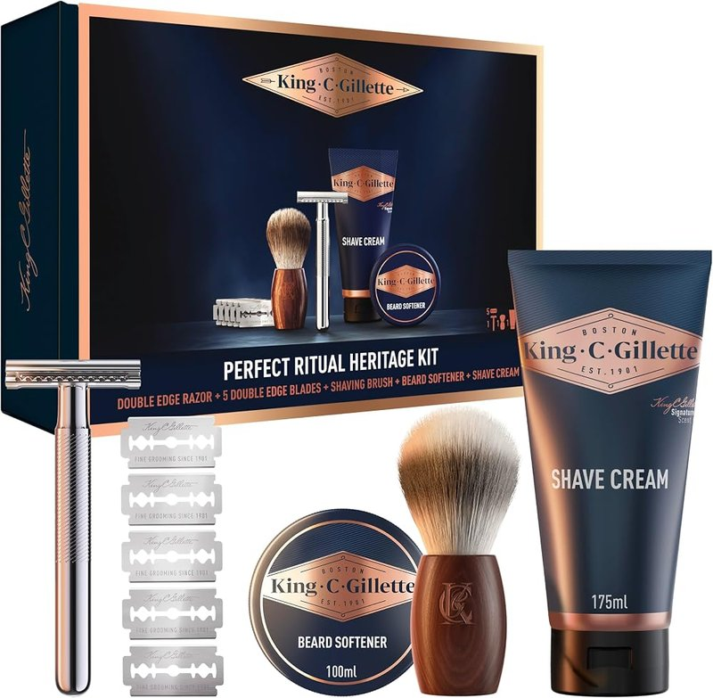

Kit de Barba CUSMAY 11 em 1
11 peças: champô, óleos, bálsamo, escova, pente, tesoura, navalha e bolsa
Sugestões para oferecer com menos margem de erro, privilegiando conjuntos com uso claro, boa apresentação e lógica para quem os recebe. Começa pelas escolhas mais fortes e usa os guias da revista para resolver a dúvida que ainda falte.
Indicado para quem quer um conjunto de barba completo para começar uma rotina em casa ou para oferecer numa caixa de presente.
Ver produto
Indicado para quem aprecia o barbear clássico ou quer oferecer um conjunto coerente nessa linha.
Ver produtoOs guias desta categoria ajudam a perceber quando um kit é aposta segura e quando um conjunto pode falhar por ser demasiado específico.
Quando é para oferecer, conta menos o detalhe técnico e mais a clareza do conjunto, a apresentação e o tipo de rotina que ele sugere.
11 peças: champô, óleos, bálsamo, escova, pente, tesoura, navalha e bolsa
Conjunto coerente para entrar no barbear clássico
Inclui óleo, bálsamo, creme e pente para uma rotina base
Inclui escova, pente e tesoura para a base do cuidado diário
Quem recebe tem de perceber rapidamente para que serve o conjunto e se o vai usar. Essa é a diferença entre acertar e ficar apenas pela aparência.
Há um kit mais completo, outro mais clássico e outro mais simples de integrar no dia a dia.
Indicado para quem quer um conjunto de barba completo para começar uma rotina em casa ou para oferecer numa caixa de presente.
Indicado para quem aprecia o barbear clássico ou quer oferecer um conjunto coerente nessa linha.
Indicado para quem quer um kit de barba com boa apresentação para uso diário ou para oferecer.
Estes artigos ajudam a perceber que tipo de kit costuma agradar, o que é ruído de catálogo e onde está o risco de errar.
A seleção completa (9 produtos), cada um com o seu contexto de uso. Preço e disponibilidade confirmam-se na Amazon.es.
lâmina 360 que acompanha o contorno do rosto
7 acessórios para barba, cabelo, nariz e orelhas
11 peças: champô, óleos, bálsamo, escova, pente, tesoura, navalha e bolsa
inclui óleo, bálsamo, creme e pente para uma rotina base
conjunto coerente para entrar no barbear clássico
inclui escova, pente e tesoura para a base do cuidado diário
Normalmente um kit com rotina fácil de perceber, apresentação cuidada e peças que qualquer pessoa reconhece e usa sem grandes dúvidas.
Sem conhecer bem a preferência de quem vai receber, o kit costuma ser a opção mais segura porque explica melhor o seu próprio uso.
Um presente funciona melhor quando a utilidade está evidente. Se o conjunto faz sentido à primeira vista, já estás mais perto de acertar.